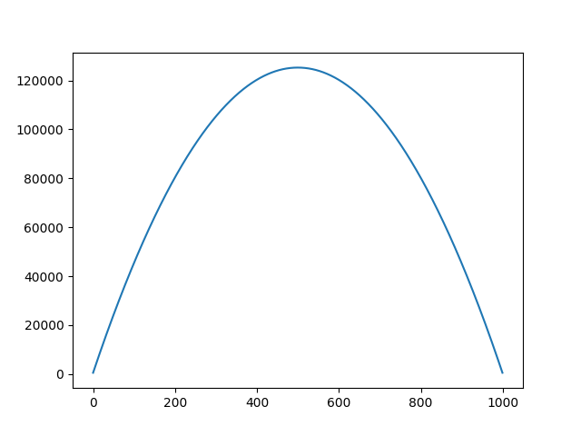

Bu derste matrislerden bahsedilecek, onların canlanmasını, dile gelmesini isxtiyoruz. Mesela alttaki gibi bir matris
\[ K = \left[\begin{array}{rrrr} 2 & -1 & 0 & 0\\ -1 & 2 & -1 & 0\\ 0 & -1 & 2 & -1\\ 0 & 0 & -1 & 2 \end{array}\right] \]
nedir? Nereden gelir? Bu matris bir şeyi temsil edecek, bilimsel bir problemi çözmemizi sağlayacak.
Matrisin özelliklerine bakalım. İlk bakışta bunun simetrik bir matris olduğunu görüyoruz. Yani \(K = K^T\). Bu tür matrisler özellikle dengedeki sistemler (equilibrium) problemlerinde çok ortaya çıkıyorlar. Başka özellikler? \(K\)’yi büyütseydik, seyrek (sparse) olacaktı, yani içinde çok fazla sayıda sıfır olacaktı. Şu haliyle tam seyrek denemez, ama aynı kalıpla büyütülürsek seyrek olur. Eğer Python kullanarak sıfır olmayan elemanları saydırmak isteseydik, sonuç ne gelecekti? 4x4 olan \(K\) için alttaki kod şu sonucu verir,
K = np.array([[2,-1,0,0],[-1,2,-1,0],
[0,-1,2,-1],[0,0,-1,2]])
print (np.count_nonzero(K))104x4 = 16 içinden 10 eleman sıfır değildir. Eğer 100x100 olsaydı? Matris aynı kalıbı takip ederse, yani çaprazı, ve çaprazın bir altı ve bir üstü dolu kalırsa, çaprazda 100 eleman olur (boyutla aynı), alt ve üstünde birer az eleman olur, yani 99+99 = 198. Toplayalım, 100 + 198 = 298. Yani 100x100 = 10000 eleman içinden 298 eleman sıfır değildir, geri kalan bir sürü eleman sıfırdır. Matris seyrektir.
Sayısal hesaplamada yoğun (dense -sıfırı fazla olmayan-) matrisler, büyük boyutlarda başımızı ağrıtabilir. Seyrek matrisleri daha hızlı çözmenin yöntemleri vardır, ama 1 milyon x 1 milyon bir yoğun matris çözmesi imkansız hale gelebilir.
Başka özellikler? Matris üçlü köşegen (tridiagonal) -üçlü köşegenlik, matris çaprazı, onun bir üstü ve altı haricindeki tüm diğer elemanların sıfır olduğu bir matristir-. Bu tür matrisler çok önemlidir, Newton sağolsun, ikinci seviye diferansiyel denklemlerden sürekli ortaya çıkarlar mesela.
Dahası? Bu bir Toeplitz matrisi, çaprazdaki değerler sabit değerler, çapraz boyunca hiç değişmiyorlar. Bu matrislere lineer zamana göre değişmeyen filtreler (linear time invariant filters) ismi de veriliyor, çünkü her satır birbirinin aynı (ve hesabımızda satırların zamanı temsil ettiği kabulünden hareketle). Python ile bir Toeplitz yaratmanın yöntemi şöyle:
import scipy.linalg as lin
K = lin.toeplitz([2, -1, 0, 0])
print (K)[[ 2 -1 0 0]
[-1 2 -1 0]
[ 0 -1 2 -1]
[ 0 0 -1 2]]100x100 için Toeplitz komutuna verdiğimiz tek satırda daha fazla sıfır gerekli. İçinde tamamen sıfır olan bir vektör yaratırız, başındaki birkaç elemanı istediğimiz değerle atarız.
import scipy.linalg as lin
vec = np.zeros((1,100))
vec[0,0] = 2
vec[0,1] = -1
print (lin.toeplitz(vec))[[ 2. -1. 0. ... 0. 0. 0.]
[-1. 2. -1. ... 0. 0. 0.]
[ 0. -1. 2. ... 0. 0. 0.]
...
[ 0. 0. 0. ... 2. -1. 0.]
[ 0. 0. 0. ... -1. 2. -1.]
[ 0. 0. 0. ... 0. -1. 2.]]Seyrek matrislerle işlem yaptığımızı Python’a bir şekilde belirtmemiz lazım, eğer mevcut haliyle bu matrisi çözmeye uğraşırsak, Python sıfırlara gelene kadar onların sıfır olduğunu bilemeyecektir.
import scipy.sparse as sparse
import numpy as np
import scipy.linalg as lin
vec = np.zeros((1,100))
vec[0,0] = 2
vec[0,1] = -1
K = lin.toeplitz(vec)
A = sparse.lil_matrix(K)
print (A.shape)(100, 100)Yanlız yukarıda yoğun matrisi önce yarattım, sonra onu değiştirerek seyrek matris yarattım, daha iyisi baştan bir seyrek matris yaratmaktı. Neyse, bu yöntemi ileri de göreceğiz.
Daha derine inelim şimdi. \(K\)
matrisi tersi alınabilen (invertible) bir matris midir? Evet. Bu ne
demektir? \(KK^{-1} = I\), ve \(I\) matrisi birim (identity) matrisidir,
Python’da np.eye(N) komutuyla yaratılabilir.
Bir matrisin tersinin alınıp alınamayacağını nasıl anlayabiliriz? Bu çok önemli, temel bir sorudur.
Bazılarının aklına determinantı hesaplamak gelebilir. Fakat benim ilk seçimim bu değil, tercihim satır indirgemek (row reduce). Önümüzde bir matris var, ve içinde neler olup bittiğini bilmiyoruz. Satır indirgeme yapın.
Bu nasıl yapılır? \(K\)’in çaprazının altındaki -1 değerlerini sıfırlamak istiyorum. Orayı temizlemek istiyorum, çünkü matrislerim eğer üçgensel (triangular) ise, olan biteni anında görebilirim.
Birinci satırı ikiye bölüp, ikinci satıra eklerim. Terminoloji: 0,0 kordinatı (en üst sol köse) bu işlem sırasında pivot oldu.
\[ \left[\begin{array}{rrrr} 2 & -1 & 0 & 0 \\ 0 & 3/2 & -1 & 0 \\ 0 & -1 & 2 & -1 \\ 0 & 0 & -1 & 2 \end{array}\right] \]
Şimdi pivot 3/2, ve onun altındaki değeri temizlemek istiyoruz. İkinci satırın 2/3’ünü alta eklersek, oradaki -1 sıfırlanır.
\[ \left[\begin{array}{rrrr} 2 & -1 & 0 & 0 \\ 0 & 3/2 & -1 & 0 \\ 0 & 0 & 4/3 & -1 \\ 0 & 0 & -1 & 2 \end{array}\right] \]
ve sonunda
\[ \left[\begin{array}{rrrr} 2 & -1 & 0 & 0 \\ 0 & 3/2 & -1 & 0 \\ 0 & 0 & 4/3 & -1 \\ 0 & 0 & 0 & 5/4 \end{array}\right] \]
Bu gerçekten hızlı bir işlem oldu. Python da determinantı zaten böyle bulacaktı. Yoketme (elimination) kullanacaktı, teker teker -1’leri yokedecekti. Peki determinantın değeri nedir? 5. Niye 5? Çünkü elimizdeki artık üçgensel bir matris, ve böyle matrislerde çaprazdaki elemanları birbiriyle çarpmakla determinant hemen hesaplanır. Python aynen böyle yapacaktı, \(2 \cdot 3/2 \cdot 4/3 \cdot 5/4 = 5\).
Şimdi tersinin olup olmadığı sorusuna geri dönelim: Bir üst üçgensel (upper triangular) matris ne zaman tersine çevirilebilir haldedir? Determinant kelimesini kullanmamıza gerek yok, çapraza bakarız, eğer bu çapraz sıfır değeri olmayan bir çapraz ise bu matris tersine çevirilebilir demektir. Terminoloji: demek ki elimizde N tane (\(K_4\) için 4) tane sıfır olmayan pivot var.
\[ C = \left[\begin{array}{rrrr} 2 & -1 & 0 & -1\\ -1 & 2 & -1 & 0\\ 0 & -1 & 2 & -1\\ -1 & 0 & -1 & 2\\ \end{array}\right] \]
Peki şu matris? Toeplitz formunda ama üst sağ ve alt sol köşelerde ekstra bir -1 değeri var. Fakat iddia ediyorum ki bu matris tersine çevirebilir değil ve bunun için determinant, ya da yoketme tekniğine gerek yok. Terminoloji: Matrise \(C\) denilmesi onun değerlerinin dairesel (circulant) olmasından ileri geliyor. -1 değerlerine bakın, sanki bir yuvarlak oluşturuyorlar, sıfır değerleri aynı şekilde.
Devam edelim: Diyelim ki \(C\) bir vektörü çarpıyor (zaten matrislerin tek amacı bu, vektörler ile çarpılmak), ve ortaya sıfır vektörü çıkıyor. Boş olan vektör ne olabilir?
\[ C = \left[\begin{array}{rrrr} 2 & -1 & 0 & -1\\ -1 & 2 & -1 & 0\\ 0 & -1 & 2 & -1\\ -1 & 0 & -1 & 2\\ \end{array}\right] \left[\begin{array}{r} \\ \\ \\ \\ \end{array}\right] = \left[\begin{array}{r} 0\\ 0\\ 0\\ 0 \end{array}\right] \]
Şu olabilir
\[ C = \left[\begin{array}{rrrr} 2 & -1 & 0 & -1\\ -1 & 2 & -1 & 0\\ 0 & -1 & 2 & -1\\ -1 & 0 & -1 & 2\\ \end{array}\right] \left[\begin{array}{r} 1\\ 1\\ 1\\ 1\\ \end{array}\right] = \left[\begin{array}{r} 0\\ 0\\ 0\\ 0 \end{array}\right] \]
İddia ediyorum ki böyle bir vektörün olabilmesi \(C\)’nin tersine çevirilebilir olma olasılığını yoketti. Nasıl?
Eğer \(C\)’nin tersi olabilseydi, \(Cu = 0\) denklemi ne olurdu? İki tarafı bu “olabilen’’ \(C^{-1}\) ile çarpıp sonuca bakalım:
\[ C^{-1}Cu = C^{-1}0 \]
\[ I u = 0 \]
\[ u = 0 \]
Yani eğer \(C\)’nin tersi olsaydı, \(Cu = 0\) denkleminin tek sonucu \(u=0\) olurdu. Fakat bu böyle değildir, üstte içinde 1 olan vektör bunun kanıtı. O zaman bir uyuşmazlık, absürtlük elde ettik, demek ki \(C\)’nin tersi olduğu iddiası yanlıştır.
Fiziksel olarak \(K\) ve \(C\)’yi kütle ve yay sistemi olarak kabul edebiliriz. Mesela \(K\) şöyle bir sistemi temsil edebilir:
Yuvarlak olan \(C\) sistemi şunu temsil edebilir
Resimdeki noktalar kütleler, ve yaylar o kütleleri birbirine bağlıyorlar.
\(T\) Matrisi
Bu matris \(K\)’ye benzer, fakat en üst satırda 2 yerine 1 var.
\[ \left[\begin{array}{rrrr} 1 & -1 & 0 & 0\\ -1 & 2 & -1 & 0\\ 0 & -1 & 2 & -1\\ 0 & 0 & -1 & 2 \end{array}\right] \]
Kütle ve yay sistemine dönersek bu matris bir ucu serbest olan bir mekanik sistemi gösterebilir.
B Matrisi
\[ \left[\begin{array}{rrrr} 1 & -1 & 0 & 0\\ -1 & 2 & -1 & 0\\ 0 & -1 & 2 & -1\\ 0 & 0 & -1 & 1 \end{array}\right] \]
Bu sistem de her iki ucu da serbest olan bir sistemdir. Bu sistemi alıp istediğimiz yere götürebiliriz.
Son iki matrisin ikisi de simetriktir, üçgensel ve köşegen (diagonal) matrislerdir. Niye üçgensel ve köşegen? Çünkü her kütle sağ ve solunda tek bir (diğer) kütleye bağlıdır, o yüzden bağlı olmadığı kütlelere olan matris değeri 0 olarak gösterilir, bu da bir üçgensel köşegen sistem ortaya çıkarır.
Ama T ve B artık Toeplitz değildir.
Bu noktada sınır şartları (boundary conditions) kavramına vurgu yapmakta yarar var. Mekanik sistemde üçün ne olduğu matrislere sınır şartı olarak yansıyor. Ve bu şartlar bir sistemin çözülmesinde son derece önemli. Hoca kendisine bir problemle gelenlere genelde ilk önce bu soruyu soruyor o yüzden: “sınır şartların ne?’’.
Tersine çevirilme durumu? T tersine çevirilebilir, B çevirilemez. B için yine aynı \(u = \left[\begin{array}{cccc} 1 & 1 & 1 & 1 \end{array}\right]^T\) ispatını kullanabiliriz.
K, T, B, C matrislerini aynı anda yaratan bir Python programı şurada.
Kullanım mesela 4x4 boyutları için K, T, B, C = ktbc(4)
şeklinde, bu bize tüm özel matrisleri bir kerede oluşturuyor.
import scipy.linalg as lin
def ktbc(n):
vec = np.zeros((1,n))
vec[0,0] = 2
vec[0,1] = -1
K = lin.toeplitz(vec)
T = np.copy(K)
T[0,0] = 1
B = np.copy(K)
B[0,0] = 1
B[n-1,n-1] = 1
C = np.copy(K)
C[n-1,n-1] = 1
return K, T, B, CKapatırken şu özellikleri de ekleyelim.
K, T pozitif kesin (positive definite) matrislerdir.
C, B pozitif yarı-kesin (positive semi-definite) matrislerdir.
Eğer simetrik bir matrisim var ise ve pivotların hepsi pozitif ise, o matris hem tersine çevirelebilir, hem de pozitif kesin demektir. Yani bir matrise bakarız, yoketme tekniğini uygularız sonra pivotlarına bakarız.
Pozitif kesinlik çok önemli bir kavramdır, lineer cebirin tamamını biraraya getirir sanki, özdeğerlere (eigenvalue) bağlıdır, least square yöntemine bağlıdır, determinantlar. Her yerden çıkar.
Geriye Doğru Farklılık Matrisi
Python toeplitz çağrısının değişik bir şekilde
kullanarak geriye doğru farklılık (backward difference) matrisi de
yaratabiliriz. Bu kullanımda matrisin sol kolonunu, ve üst satırını
tamamen belirtmek gerekiyor.
import scipy.linalg as lin
D = lin.toeplitz([1, -1, 0, 0], [1, 0, 0, 0])
print (D)[[ 1 0 0 0]
[-1 1 0 0]
[ 0 -1 1 0]
[ 0 0 -1 1]]Çözülmüş Soru 1.1 B
Soru: \(T\) matrisini \(H\) matrisine çevir bunu \(J\) matrisini kullanarak yap.
\[ H = \left[\begin{array}{rrr} 2 & -1 & 0\\ -1 & 2 & -1\\ 0 & -1 & 1 \end{array}\right] \]
\[ T = \left[\begin{array}{rrr} 1 & -1 & 0\\ -1 & 2 & -1\\ 0 & -1 & 2 \end{array}\right] \]
Kitaptaki bu sorunun çözümündeki \(J\) matrisi birimsel matrisin tersidir, şu şekildedir:
\[ \left[\begin{array}{rrr} 0 & 0 & 1\\ 0 & 1 & 0\\ 1 & 0 & 0 \end{array}\right] \]
Yani 1 sayıları sola yatık çaprazda değil sağa yatik çaprazda. Bu matrisin çarpım işlemi sırasında ilginç etkileri var. Eğer sağdan çarpılırsa bir matrisin her satırının içindeki sırayı tersine çeviriyor. Eğer soldan çarpılırsa her kolon içindeki sırayı tersine çeviriyor. \(J*T*J\) çarpımı aradığımız sonuç. Yani satırları çevirdikten sonra, kolonları çevirince istediğimiz sonuca erişiyoruz. Python kodları
import scipy.linalg as lin
T = lin.toeplitz([2, -1, 0])
T[0,0] = 1
J = np.fliplr(np.eye(3))
print (T)
print (np.dot(T,J))
print (np.dot(J, np.dot(T,J)))[[ 1 -1 0]
[-1 2 -1]
[ 0 -1 2]]
[[ 0. -1. 1.]
[-1. 2. -1.]
[ 2. -1. 0.]]
[[ 2. -1. 0.]
[-1. 2. -1.]
[ 0. -1. 1.]]Soru 1.1 2
\(T_3^{-1}\) hesabını üç basamakta yap ve bunu yaparken daha önce gördüğümüz \(U\) ve \(U^{-1}\) matrislerini kullan.
import scipy.linalg as lin
T = lin.toeplitz([2, -1, 0])
T[0,0] = 1
U = np.array([[1, -1, 0],
[0, 1, -1],
[0, 0, 1]])
print (np.dot(U.T,U))
print (np.dot(U,lin.inv(U)))
print (np.dot(lin.inv(U), lin.inv(U).T))[[ 1 -1 0]
[-1 2 -1]
[ 0 -1 2]]
[[1. 0. 0.]
[0. 1. 0.]
[0. 0. 1.]]
[[3. 2. 1.]
[2. 2. 1.]
[1. 1. 1.]]Soru 1.1.5
\(K_3\) ve \(K_4\)’un tersini al (\(K_2\)’yi de bir zahmet), ve şu kesirler olsun
\[ \frac{1}{det} = \frac{1}{4} \frac{1}{5}\].
\[ K_3^{-1} = \frac{1}{4} \left[\begin{array}{rrr} 3 & 2 & 1 \\ 2 & 4 & 2 \\ 1 & 2 & 3 \end{array}\right] \quad \textrm{ve} \quad K_4^{-1} = \frac{1}{5} \left[\begin{array}{rrrr} 4 & 3 & 2 & 1 \\ 3 & 6 & 4 & 2 \\ 2 & 4 & 6 & 3 \\ 1 & 2 & 3 & 4 \end{array}\right] \]
İlk önce \(K=K_5\) determinantını tahmin edin. Sonra \(\det(K)\) ve \(inv(K)\)’yi hesaplayın ve \(\det(K) * inv(K)\) hesabını yapın.
import scipy.linalg as lin
K, T, B, C = ktbc(3)
print (lin.inv(K))
print (lin.det(K))
print (lin.det(K) * lin.inv(K))
K, T, B, C = ktbc(5)
print (lin.det(K))
print (lin.inv(K))
print (lin.det(K) * lin.inv(K))[[0.75 0.5 0.25]
[0.5 1. 0.5 ]
[0.25 0.5 0.75]]
4.0
[[3. 2. 1.]
[2. 4. 2.]
[1. 2. 3.]]
6.0
[[0.83333333 0.66666667 0.5 0.33333333 0.16666667]
[0.66666667 1.33333333 1. 0.66666667 0.33333333]
[0.5 1. 1.5 1. 0.5 ]
[0.33333333 0.66666667 1. 1.33333333 0.66666667]
[0.16666667 0.33333333 0.5 0.66666667 0.83333333]]
[[5. 4. 3. 2. 1.]
[4. 8. 6. 4. 2.]
[3. 6. 9. 6. 3.]
[2. 4. 6. 8. 4.]
[1. 2. 3. 4. 5.]]Soru 1.1.22
Çözülmesi istenen denklem \(du^2/dx^2 = 1\), elastik çubuk problemi ve çubuğun iki tarafı sabitlenmiş.
import scipy.sparse as sparse
import scipy.sparse.linalg
import scipy.linalg as lin
n = 1000
vec = np.zeros((1,n))
vec[0,0] = 2; vec[0,1] = -1
K = lin.toeplitz(vec)
A = sparse.csc_matrix(K)
e = np.ones((n,1))
u = sparse.linalg.spsolve(A,e)
plt.plot(u)
plt.savefig('1-1-22.png')
Sonuç üstteki grafik gibi olmalı. Yani çözümümüz olan \(u\) değerleri bir parabol oluşturuyorlar. Bu demektir ki çubuğun orta noktaları daha fazla yer değiştiriyor, uç noktaları daha az yer değiştiriyor.
Elastik Çubuk
Derste çokça kullanılan elastik çubuk kavramından şimdi bahsetmek iyi olur. Bu çubuk tek boyutlu ve sadece boyuna doğru (yana doğru değil) uzayıp kısalabilen matematiksel bir kurgu. Bu çubuğu hayalimizde birbirine zincirler ile bağlı sonsuz sayıda ufak parcaçığın toplamı olarak düşünebiliriz. \(x\) ve \(u(x)\) bağlamında ise çubuğun iki kere fotoğrafının çekildiğini düşünelim. İlk fotoğrafta \(x\) bu çubuğun üzerindeki bir parcaçık. \(u(x)\) ise tüm ağırlıklar, kuvvetler etkilerini gösterip uzama, kısalma bitince çekilen ikinci fotoğrafta ilk resimdeki \(x\) noktasının ne kadar yer değiştirmiş olduğu.
“Ucu sabitlemek’’ gibi kavramlar duyacağız, bunlar bazen fiziksel olarak anlamlı, bazen ise ikinci fotoğrafta esneme sonrası hangi noktaya gelindiğinin önceden belirlenmesi anlamında. \(du/dx\) gibi bir türevi irdelerken ise ortada zaman olmadığını dikkate alalım, türev \(x\)’e göre yani ilk resimdeki parcaçıgin yeri. O zaman \(du/dx\) ikinci resimdeki esnemenin çubuktaki yer arttıkça (aşağı indikçe) ne kadar değiştiği.
Denklemin sağında yer alan değerler, sisteme dışarıdan verilen güç olarak görülebiliyor, hakikaten de değişimin ikinci türevi ivmedir. 1.2.22 sorusunu görsel olarak nasıl hayal edebiliriz? Çubuğun iki ucu sabitlenmiş, o sebeple K matrisi kullanıyoruz zaten, böylece sınır şartları dahil oluyor.
Python, VPython üzerinden kullanılabilecek KineticsKit adlı paket sistemi zihinde canlandırmak için yardımcı olabilir. Birbirine eşit uzaklıkta, aynı kütlede ve arasında yaylar olan 7 tane topu bırakınca ne olduğunu simüle edebiliriz. Resimdeki sol kısım başlamadan önce, sağ kısım yerçekimi işini bitirdikten ve toplar durduktan sonrasını gösteriyor.
Alttaki program hem görsel simülasyonu yapacak, hem de topların önce ve sonra değerlerini hatırlayarak yerçekimi sonrası aradaki farkı hesaplayacak. Sonuçlara bakınca hakikaten de ortadaki topların daha fazla hareket ettiğini görebiliyoruz. Grafiksel olarak düşünürsek te mantıklı, üste yakın toplar üstten bağlı oldukları için fazla uzaklaşamıyorlar, ortalara yakın toplar, bir üstlerinden de aldıkları ek mesafe sayesinde daha fazla yer değiştirebiliyor. Ama alt kısıma yaklaştıkça orada bir birikme oluyor, çünkü alt üç kısım da sabitlenmiş.
from KineticsKit import *
from visual import vector
system = System(timestep=0.04, gravity=1)
mass1 = Mass(m=0.1, pos=(0.0, 0.0, 0.0), fixed=1)
mass2 = Mass(m=0.1, pos=(0.0, 0.5, 0.0))
mass3 = Mass(m=0.1, pos=(0.0, 1.0, 0.0))
mass4 = Mass(m=0.1, pos=(0.0, 1.5, 0.0))
mass5 = Mass(m=0.1, pos=(0.0, 2.0, 0.0))
mass6 = Mass(m=0.1, pos=(0.0, 2.5, 0.0))
mass7 = Mass(m=0.1, pos=(0.0, 3.0, 0.0), fixed=1)
system.insertMass(mass1)
system.insertMass(mass2)
system.insertMass(mass3)
system.insertMass(mass4)
system.insertMass(mass5)
system.insertMass(mass6)
system.insertMass(mass7)
spring1 = SingleHelixSpring(m0=mass1, m1=mass2, k=1, damping=0.5)
system.insertSpring(spring1)
spring2 = SingleHelixSpring(m0=mass2, m1=mass3, k=1, damping=0.5)
system.insertSpring(spring2)
spring3 = SingleHelixSpring(m0=mass3, m1=mass4, k=1, damping=0.5)
system.insertSpring(spring3)
spring4 = SingleHelixSpring(m0=mass4, m1=mass5, k=1, damping=0.5)
system.insertSpring(spring4)
spring5 = SingleHelixSpring(m0=mass5, m1=mass6, k=1, damping=0.5)
system.insertSpring(spring5)
spring5 = SingleHelixSpring(m0=mass6, m1=mass7, k=1, damping=0.5)
system.insertSpring(spring5)
loc_1 = [mass2.sphere.pos.y, mass3.sphere.pos.y,
mass4.sphere.pos.y, mass5.sphere.pos.y,
mass6.sphere.pos.y]
count = 0
while 1:
system.step()
count += 1
if count == 100: break
loc_2 = [mass2.sphere.pos.y, mass3.sphere.pos.y,
mass4.sphere.pos.y, mass5.sphere.pos.y,
mass6.sphere.pos.y]
from itertools import izip
for x,y in izip(loc_1, loc_2):
print x-y